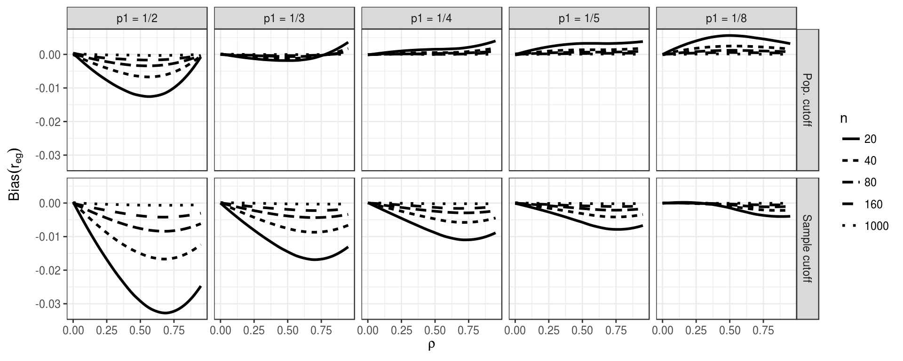
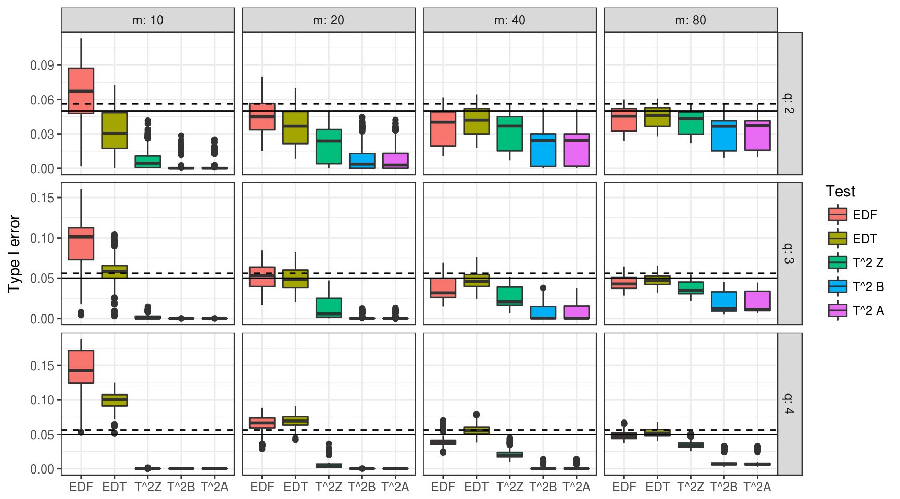
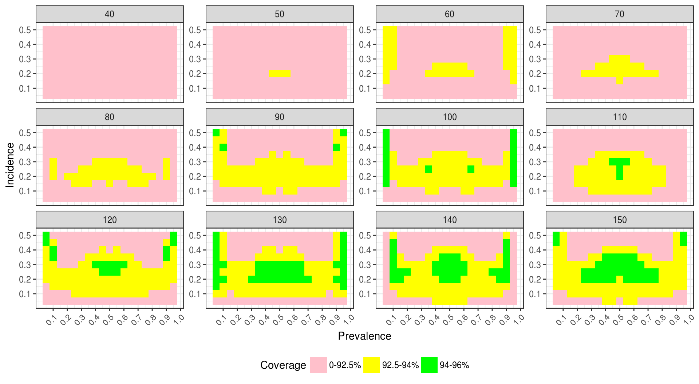
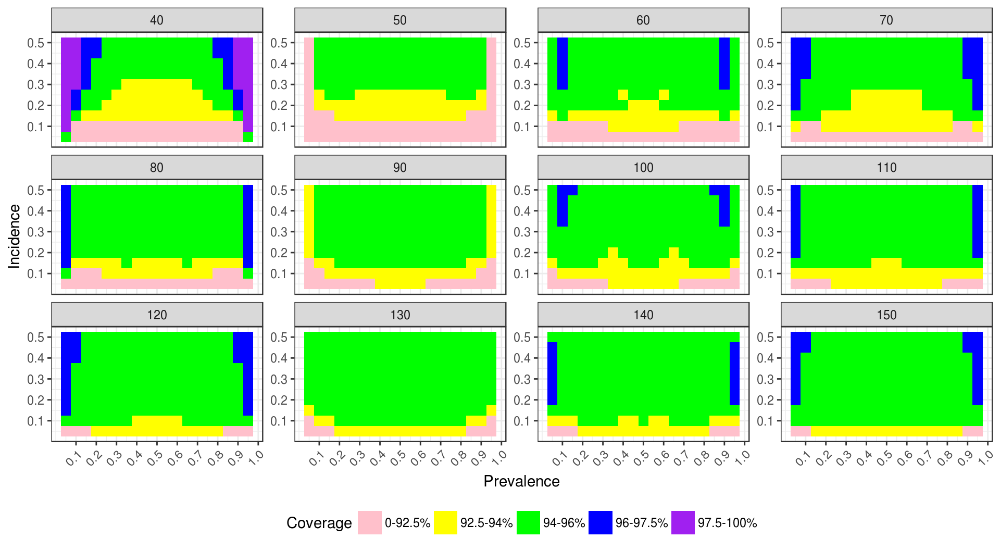

Chapter 8 Design, analysis, and presentation of simulation results
8.1 Designing the simulation experiment
- The primary limitation of simulation studies is generalizability.
- Choose conditions that allow you to relate findings to previous work.
- Err towards being comprehensive.
- The goal should be to build an understanding of the major moving parts.
- Presentation of results can always be tailored to illustrate trends.
- Explore breakdown points (e.g., what sample size is too small for applying a given method?).
8.2 Choosing parameter levels
Four possible strategies:
- Vary a parameter over its entire range (or nearly so).
- Choose parameter levels to represent realistic practical range.
- Empirical justification based on systematic reviews of applications
- Or at least informal impressions of what’s realistic in practice
- Vary nuisance parameters (at least a little) to test sensitivity of results.
- Choose parameters to emulate one important application.
8.3 Presentation
Your results have finished running…what now?
- Understand the effects of all of the factors manipulated in the simulation
- Develop evidence that addresses your research questions
Three approaches to analysis and presentation:
- Tabulation
- Visualization
- Modeling
8.4 Tabulation
- Traditionally, simulation study results are presented in big tables. Tables are fine if…
- they involve only a few numbers, and a few targeted comparisons
- it is important to report exact values for some quantities
- But simulations usually produce lots of numbers, and involve making lots of comparisons.
- relative performance of alternative estimators
- performance under different conditions for the data-generating model
Exact values for bias/RMSE/type-I error are not usually of interest.
It is often more useful and insightful to present results in graphs (Gelman, Pasarica, & Dodhia, 2002).
8.5 Visualization
Visualization should nearly always be the first step in analyzing simulation results.
This often requires creating a BUNCH of graphs to look at different aspects of the data.
Helpful tools/concepts:
- Boxplots are often useful for depicting range and central tendency across many combinations of parameter values.
- Color, shape, line type to encode different factors
- Small multiples (faceting) to encode further factors (e.g., varying sample size)
8.5.1 Example 1
- Bias of biserial correlation estimate from an extreme groups design
- \(96 \times 2 \times 5 \times 5\) factorial design (true correlation, cut-off type, cut-off percentile, sample size)

Source: Pustejovsky, J. E. (2014). Converting from d to r to z when the design uses extreme groups, dichotomization, or experimental control. Psychological Methods, 19(1), 92-112.
8.5.2 Example 2
- Type-I error rates of small-sample corrected F-tests based on cluster-robust variance estimation in meta-regression
- Comparison of 5 different small-sample corrections
- Complex experimental design, varying
- sample size (\(m\))
- dimension of hypothesis (\(q\))
- covariates tested
- degree of model mis-specification

Source: Tipton, E., & Pustejovsky, J. E. (2015). Small-sample adjustments for tests of moderators and model fit using robust variance estimation in meta-regression. Journal of Educational and Behavioral Statistics, 40(6), 604-634.
8.5.3 Example 3 (Pustejovsky & Swan, 2014)
- Coverage of parametric bootstrap confidence intervals for momentary time sampling data
- Compare maximum likelihood estimators to posterior mode (penalized likelihood) estimators of prevalence
- 2-dimensional parameter space:
- prevalence (19 levels)
- incidence (10 levels)
- Sample size (15 levels)
Source: Pustejovsky, J. E., & Swan, D. M. (2015). Four methods for analyzing partial interval recording data, with application to single-case research. Multivariate Behavioral Research, 50(3), 365-380.
## -------------------------------------------------------------------------## You have loaded plyr after dplyr - this is likely to cause problems.
## If you need functions from both plyr and dplyr, please load plyr first, then dplyr:
## library(plyr); library(dplyr)## -------------------------------------------------------------------------##
## Attaching package: 'plyr'## The following objects are masked from 'package:dplyr':
##
## arrange, count, desc, failwith, id, mutate, rename, summarise,
## summarize

8.6 Modeling
Simulations are designed experiments, often with a full factorial structure
Helpful tools:
- ANOVA can be useful for understanding major sources of variation in simulation results (e.g., identifying which factors have negligible/minor influence on the bias of an estimator).
- Smoothing (e.g., local linear regression) over continuous factors
8.6.1 Example 1
- Bias of biserial correlation estimate from an extreme groups design
- \(96 \times 2 \times 5 \times 5\) factorial design (true correlation, cut-off type, cut-off percentile, sample size)
anova_table <- aov(bias ~ rho * p1 * fixed * n, data = r_F)
summary(anova_table)## Df Sum Sq Mean Sq F value Pr(>F)
## rho 1 0.002444 0.002444 1673.25 <2e-16 ***
## p1 4 0.023588 0.005897 4036.41 <2e-16 ***
## fixed 1 0.015858 0.015858 10854.52 <2e-16 ***
## n 4 0.013760 0.003440 2354.60 <2e-16 ***
## rho:p1 4 0.001722 0.000431 294.71 <2e-16 ***
## rho:fixed 1 0.003440 0.003440 2354.69 <2e-16 ***
## p1:fixed 4 0.001683 0.000421 287.98 <2e-16 ***
## rho:n 4 0.002000 0.000500 342.31 <2e-16 ***
## p1:n 16 0.019810 0.001238 847.51 <2e-16 ***
## fixed:n 4 0.013359 0.003340 2285.97 <2e-16 ***
## rho:p1:fixed 4 0.000473 0.000118 80.87 <2e-16 ***
## rho:p1:n 16 0.001470 0.000092 62.91 <2e-16 ***
## rho:fixed:n 4 0.002929 0.000732 501.23 <2e-16 ***
## p1:fixed:n 16 0.001429 0.000089 61.12 <2e-16 ***
## rho:p1:fixed:n 16 0.000429 0.000027 18.36 <2e-16 ***
## Residuals 4700 0.006866 0.000001
## ---
## Signif. codes: 0 '***' 0.001 '**' 0.01 '*' 0.05 '.' 0.1 ' ' 1library(lsr)
# etaSquared(anova_table)8.7 Presentation
- Present selected results that clearly illustrate the main findings from the study and anything unusual/anomolous.
- In the text of your write-up, include examples that make specific numerical comparisons.
- Include supplementary materials containing
- additional figures and analysis
- complete simulation results
- reproducible code for running the simulation and doing the analysis